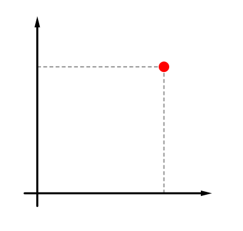
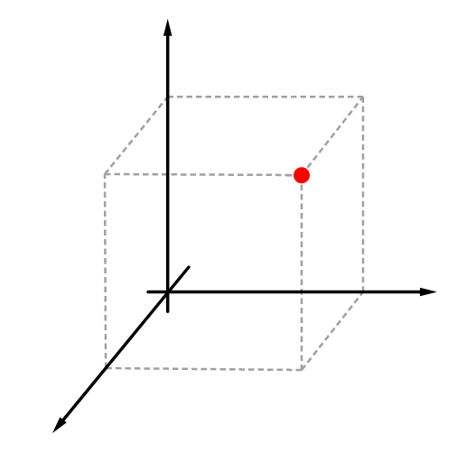
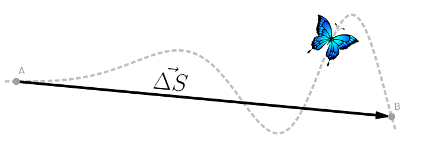

Ao estudarmos um objeto, precisamos, antes de tudo, sabermos responder:
◦ Ele está em repouso ou em movimento?
◦ Qual é a distância percorrida?
◦ Qual é o seu deslocamento?
◦ A partir de qual referencial estamos estudando-o?
◦ Trata-se de um ponto material ou de um corpo extenso?
Para responder tais questões é, porém, antes preciso discutir os conceitos a seguir:
É uma estrutura geométrica imaginária – a partir da qual nós estudamos um problema –, formada por eixos perpendiculares entre si, e com marcações de distância a partir de um ponto de origem)
|
 |
Observe que, uma vez definido o referencial, podemos estabelecer a localização de um ponto, em qualquer lugar da superfície, usando apenas dois valores. Chamamos a sequência destes dois valores de par ordenado (x, y) |
 |
Se Formos estudar um objeto que está no espaço, podemos localizá-lo, acrescentando um número ao par ordenado, formando então um terno ordenado (x, y, z) |
Corpo em repouso: Dizemos que o corpo está em repouso em relação a um
referencial quando a sua posição não se altera à medida que o tempo passa.
Corpo em movimento: Dizemos que o corpo está em movimento em relação a um referencial quando a sua posição se altera à medida que o tempo passa.
Distância percorrida: Ao percorrermos um espaço, passamos por infinitos pontos. A soma destes infinitos pontos compõe uma curva (também pode ser uma reta). O comprimento desta curva é o que chamamos de distância percorrida. Essa grandeza é escalar e não tem nenhum importância para a física.
Deslocamento: No deslocamento, não levamos em consideração todos os pontos pelos quais passamos, mas apenas o ponto inicial e o final. O deslocamento é uma grandeza vetorial de grande importância para a física.

Ponto material: Consideramos um objeto estudado um ponto material quando as
suas dimensões (comprimento, largura ou altura) são desprezíveis para a resolução do
problema, isto é, quando não precisamos levá-los em consideração para resolver o problema
proposto.
Corpo extenso: Consideramos um objeto um corpo extenso quando é preciso levar em consideração pelo menos uma de suas dimensões.